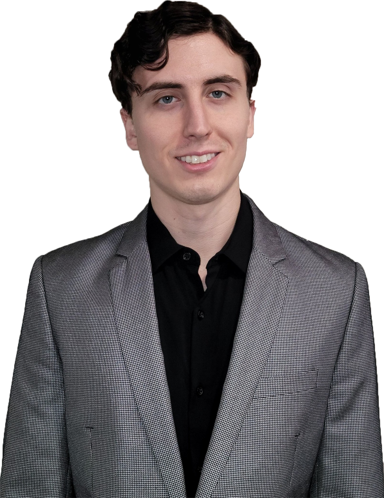

Who we are
Argot Nova was founded in the Washington D.C. metropolitan area in 2021
by Aubrey and Rob, two
friends and colleagues, who wanted to
embody
the changes they wished to see in the contracting realm
Our Values
- Do what we say we will do
- No tricks
- Flexible and transparent operations
- Pragmatic decision-making
Our Team
 Aubrey Smiley McAuliffe , Managing Partner and Principal Data Scientist, is a
seasoned
technical and business leader with extensive experience in data
science and engineering. She has managed projects, built data pipelines, developed models and
applications, and delivered cost-efficient solutions using a wide range of technologies. Aubrey
leverages her diverse background, including her military service and data science instruction,
to lead teams that excel in delivering high-quality products.
Aubrey oversees operations, manages data projects, and designs custom data/application
architectures for teams in multiple countries. She has developed, personally and at the head of
her matrixed team, several applications and machine learning models while building scalable,
cost-efficient systems.
Aubrey Smiley McAuliffe , Managing Partner and Principal Data Scientist, is a
seasoned
technical and business leader with extensive experience in data
science and engineering. She has managed projects, built data pipelines, developed models and
applications, and delivered cost-efficient solutions using a wide range of technologies. Aubrey
leverages her diverse background, including her military service and data science instruction,
to lead teams that excel in delivering high-quality products.
Aubrey oversees operations, manages data projects, and designs custom data/application
architectures for teams in multiple countries. She has developed, personally and at the head of
her matrixed team, several applications and machine learning models while building scalable,
cost-efficient systems.
As a training program manager and instructor for the National Cryptologic School and the
Flatiron School, she has led a team of data science teachers and developed instructional
practices to ensure high-quality data science curriculum delivery to adult learners. Aubrey's
expertise in managing large-scale data projects in a pragmatic and efficient way while leading
high-performing technical teams from the front make her a valuable asset to any organization
that Argot Nova works with.
Rob Scherer, Founding Partner, has over eight years of experience in military intelligence, deployed defense contracting, and non-profit research, and brings a language analysis and intelligence background to the company. Rob's skill set primarily covers language-enabled geopolitical and conflict analysis, and he is proficient in Farsi, Dari, Portuguese, French, and Hebrew. At the present time, Rob is representing Argot Nova as a researcher for the ACLED project, covering conflict and protest situations in Iran, the Democratic Republic of the Congo, and Australia. As a key leader of the company, Rob oversees vendor support to clients, manages projects, conducts open source research, and applies his foreign language and cultural proficiency to analyze and interpret diverse media sources.
 Matt Sparr , Software and Machine Learning Engineer, is well versed in the machine learning lifecycle including data collection, model training and deployment, performance monitoring, and automation. He has productionized several models as well as designing and building databases and downstream services. His previous work in mobile development and robotic process automation along with his education in data science and artificial intelligence give him a diverse toolkit of skills and unique perspective on all things data.
Reva Hirave, is a full-stack software engineer from Northern Virginia with a focus on UI/UX and graphic design. She has experience with Java, C, C#, Python, HTML, CSS, Bootstrap 5, JavaScript, and GoLang. A skilled graphic and web designer proficient in Adobe Creative Suite, Procreate, and Canva, she has independently developed a .NET app and led a team to develop a MERN stack application. Reva is also a PR Chair for the Society of Asian Scientists and Engineers and has served as a teaching assistant for Data Structures and Intro to Computational Data Science lab.